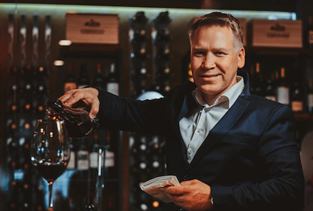
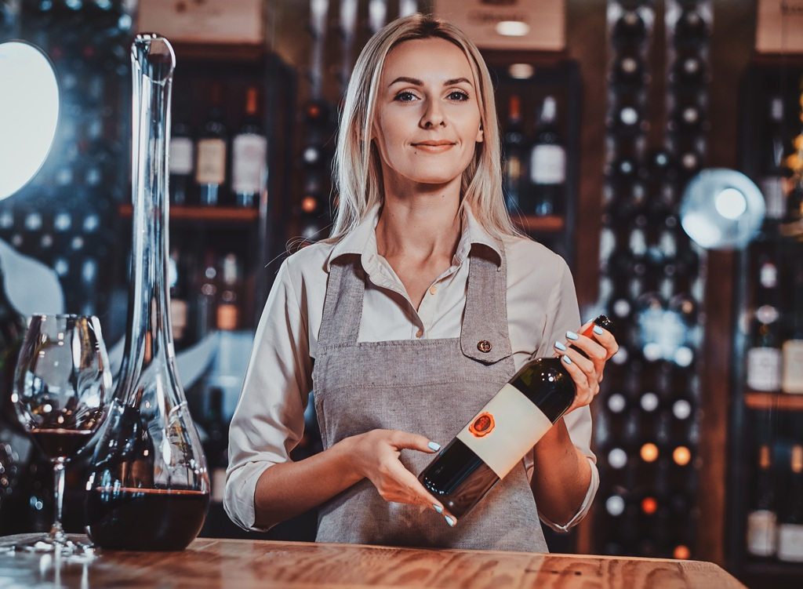
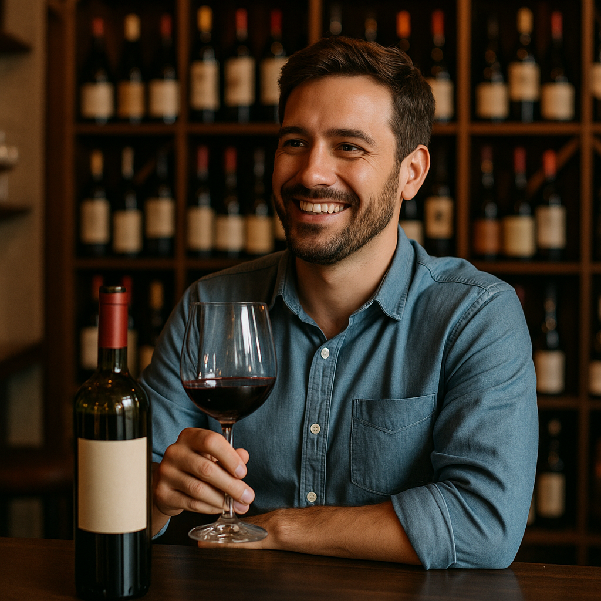
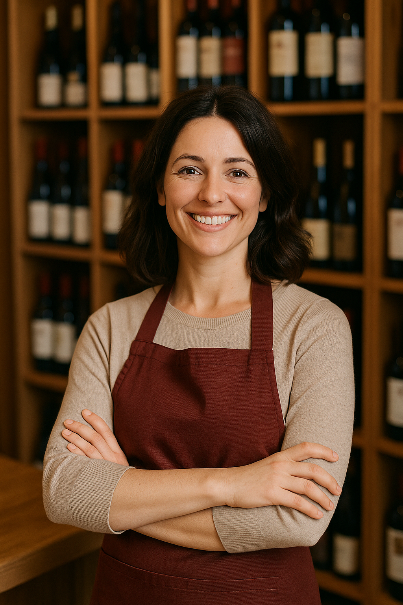
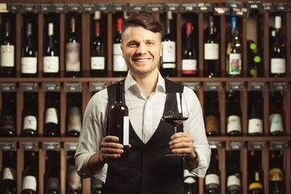
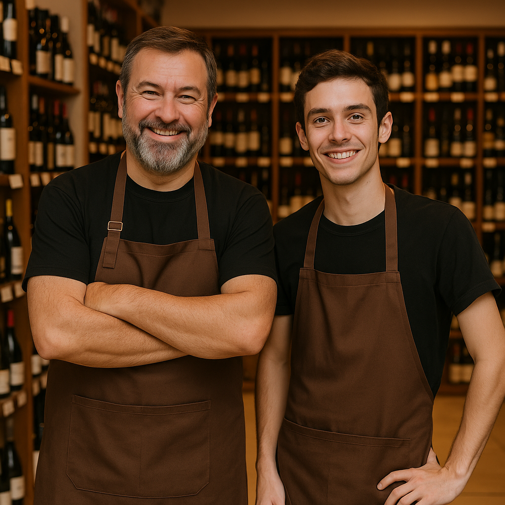
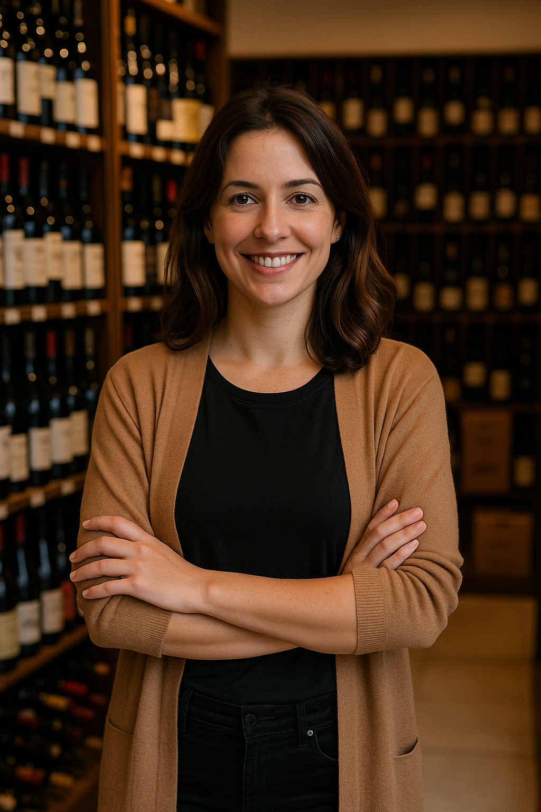

Conheça Nossa Equipe de Especialistas
Giulio Agnello
Fundador e enólogo-chefe da Vinheria Agnello, com mais de 20 anos de experiência na produção e seleção de vinhos finos. Formado nas melhores escolas de enologia da Itália, traz em seu paladar a tradição dos vinhedos familiares.
Bianca Agnello
Nossa sommelier especialista em harmonizações, com certificação internacional. Apaixonada por vinhos brancos aromáticos, cria experiências gastronômicas memoráveis para nossos clientes
Gerson Oliveira
Especialista em atendimento ao cliente com 15 anos de experiência no mercado vinícola. Seu conhecimento técnico e simpatia transformam cada visita em uma jornada enológica personalizada.
Maria Silva
Nossa especialista em vinhos do Novo Mundo, com foco em rótulos argentinos e chilenos. Seu olhar criterioso ajuda a selecionar os melhores exemplares para nossa adega.
Jorge Mendonça
Consultor de vinhos raros e de coleção, com vasta experiência no mercado internacional. Responsável por nossas aquisições mais exclusivas
Cleiton e Cleitinho
Dupla dinâmica que garante que tudo funcione perfeitamente nos bastidores.Cleiton, com 20 anos de experiência em armazenamento de vinhos, e Cleitinho, especialista em entregas especiais, garantem que cada garrafa chegue em perfeitas condições.
Márcia Costa
Diretora de eventos e marketing, transforma cada visita à vinheria em uma experiência memorável. Organiza nossos renomados cursos de degustação e jantares temáticos